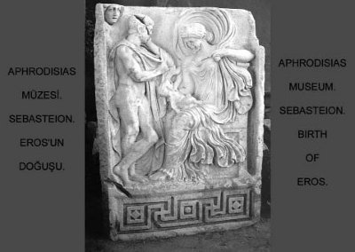

Bodrum yakınlarında, bugün Bardakçı denen yerde bir su kaynağı vardı. Bazı Bodrumlular içecek sularını bile bu kaynaktan getirirlerdi. Gene aynı yerde, kıyıları yeşil defne ağaçlarıyla, kokulu çiçeklerle dolup taşan bir göl vardı... Antikçağın insanları, Salmakis Gölü derlerdi ona. Çünkü Salmakis adlı güzeller güzeli bir perikızı, suları duru mu duru bu küçücük gölde yıkanıp serinlerdi sık sık. Doğayı bir bütün olarak sevdiği ve hele hele o güzelim hayvanları avlayıp öldürmek gibi ilkel duygulardan da uzak olduğu için, ne tanrıça Artemis, ne de Atena gibi av silahları vardı onun... Doğanın bağrında, kendi halinde yaşayıp gitmekti onun tek tutkusu... Gölde yıkanıp çıktığında, o pırıl pırıl sulara bakaraktan saçlarını tarar, sonra da kendini yöredeki çiçeklerin, ağaçların arasına atardı. Kayaların yarıklarından fışkırıp çıkmış rengârenk kokulu çiçekleri sever okşar, onların dilleriyle konuşurdu. Baharda açan kimi mavi, kimi beyaz menekşelerden bir-ikisini koparıp saçlarına takmaktan da çok hoşlanırdı...

Eros'un doğuşu
Böyle böyle Salmakis, güneşin atları yorulup gökyüzünden çekip gidene dek bütün gün gönlünce gezer tozardı... Yaz gecelerinde de sırtüstü uzanıp o derin gökyüzünde uçuşan yıldızlarla konuşurdu; sonra da o ince ve dokunaklı sesiyle, gecenin ta ötelerine doğru süzülüp giden yanık yanık ezgiler döktürürdü... Bu ezgiler Bodrum'un çevresindeki koca koca kayaların birinden ötekine zıplar, yöredeki uykusuz çobanların ve de âşıkların kulaklarında uzun uzun yankılanırdı. Sonra da güzel Salmakis, günlük uykusuna dalar giderdi... Akdeniz göklerindeki bazı yıldızlar ona tutkun olduklarından, o böyle uyurken onun çevresinde oynaşırlardı sabahlara dek... Güneş tanrısı Helyos'un atları da, o yöredeki tepelerin üstünden dörtnala geçerek günü başlatırken, mutlaka güzel Salmakis'i yavaşça uyandırırlardı.
Kısacası Salmakis; o yörede ne varsa güzel olan, hep onlarla içli dışlıydı. Üstelik canı isterse, hemen o güzel şeylerden birine de dönüşüverirdi! Bazen gölün sularında yıkanırken su olur, balık olurdu. Yüreği aşkla tutuştuğu gecelerde de ay olur, yıldız olur, sonra da yıkanıp serinlediği göle ışık ışık yağardı...
Bu gölün yakınlarındaki karşılıklı iki tepede, tanrı Hermes'le tanrıça Afrodit'in birbirlerine bakan tapınakları vardı. Bir gün Olimpos'taki saraylarında bunalan tanrı Hermes'le evren güzeli tanrıça Afrodit, birbirlerinden habersiz buradaki tapınaklarına geldiler. Bir süre sonra tapınaklarına yakın bayırda gezinirlerken birbirleriyle karşılaşan iki tanrı, biraz yarenlik ettiler; gezip tozdular... Baştanrı kıskanç Zeus'un Olimpos'taki sarayında uyuduğu saatlerde de, sessizce seviştiler... Tanrıların bu kaçamak aşkından dünyalar güzeli bir erkek çocuk dünyaya geldi. Ve kendi adları olan Hermes-Afrodit sözcüklerinden oluşan Hermafrodit adını verdiler bu güzel bebeklerine... Ve geçen zaman içinde de Hermafrodit, tez serpilip büyüdü...
Her zamanki gibi gene çiçekler arasında gezip tozduğu bir gün güzel perikızı Salmakis, yakışıklı delikanlı Hermafrodit'le karşılaştı. Ve ona aniden vuruldu. Çünkü kendini bildi bileli; uykusuz gecelerinde mırıldandığı yanık ezgilerde, sevdiği ve şekillerine büründüğü çiçeklerde, ağaçlarda, yerde gökte aslında hep bu delikanlıyı duyumsamış, onu aramıştı gizliden gizliye...
Ne var ki onunla tanışıp konuşmak istediğinde delikanlı hiç yüz gönül vermedi ona... Bu yüzden de artık uyku durak denen şeyleri unutan güzel Salmakis, onunla konuşabilme ve onu yakından tanıyabilme isteğiyle yanıp tutuşmaya başladı. Bu delikanlının kendisiyle ilgilenmesi ve ona aşk okları göndermesi için anası tanrıça Afrodit'e yalvar yakar oldu. Dileğini yerine getirirse, göl yakınlarındaki tapınağını her gün silip süpüreceği konusunda söz bile verdi. Sonra da en sevdiği rengârenk çiçeklerden bir demet yaptı ve o yöredeki dağlarda kırlarda uzun uzun o delikanlıyı aramaya başladı... Günlerce gezip tozdu, ama izine bile rastlayamadı Hermafrodit'in! Ertesi gün de uzun bir yürüyüşten sonra gene yorgun argın gölüne döndü. Ama orada Hermafrodit'le yüz yüze geliverdi!.. Çok sevinen perikızı, açık açık kim olduğunu sordu ona. Bunca yakışıklı olduğuna göre anne-babasının tanrı olması gerektiğini söyledi gülümseyerek. Sonra da; "Bak güzel delikanlı," diye başladı sözlerine. "Ben ne zamandır seni arıyorum. Gece gündüz gönlüm hep sende!" Bu yeni yetme toy delikanlı, güzel Salmakis'in buncasına doğrudan sözleri karşısında utanıp renkten renge girmeye başladı. Çünkü o bu tür duyguların ve sözlerin yabancısıydı. Bu yüzden kendini rahat bırakmasını istedi güzel perikızından... Salmakis de boynunu büküp oradan uzaklaşmak zorunda kaldı. Ne var ki uzaktan da olsa onu izleyebilmek için az ötedeki çalıların arasına sindi. Bir süre sonra Hermafrodit, karşısındaki dupduru suların çekiciliğine dayanamayıp soyundu ve göle daldı... Salmakis de saklandığı yerden çıktı. Yanıp tutuştuğu delikanlı, bembeyaz mermerden yapılmış bir heykel gibi yüzüyordu gölde. Salmakis kendini tutamayıp göle daldı ve Hermafrodit'i kolları arasına aldı. Delikanlının kendisini itmesine ve bütün gücüyle kaçma isteğine karşın Salmakis daha da sıkı sarıldı ona! Ve bir yandan da âşık olduğu bu delikanlıdan ayrılmaması ve onunla tek beden haline dönüşmesi için yalvarıp yakardı tanrılara... Ve tanrıça Afrodit; bu içi dışı bir, güzeller güzeli perikızının dileğini hemen yerine getirdi.
Böylece Salmakis, çok sevdiği Hermafrodit'le tek beden, tek gönül olarak yaşamaya başladı artık gölde ve çevresindeki kırlarda...
Batı dillerinde hem erkek, hem kadın yaradılışlı kişileri anlatmak için kullanılan "hermafrodit" sözcüğü, işte bu iki mutsuz sevgilinin serüveninden kaynaklanıyordu...